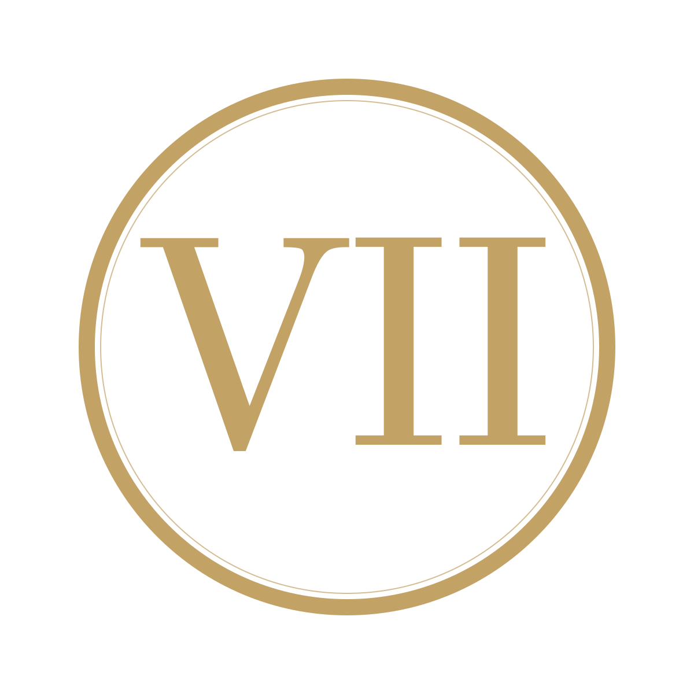
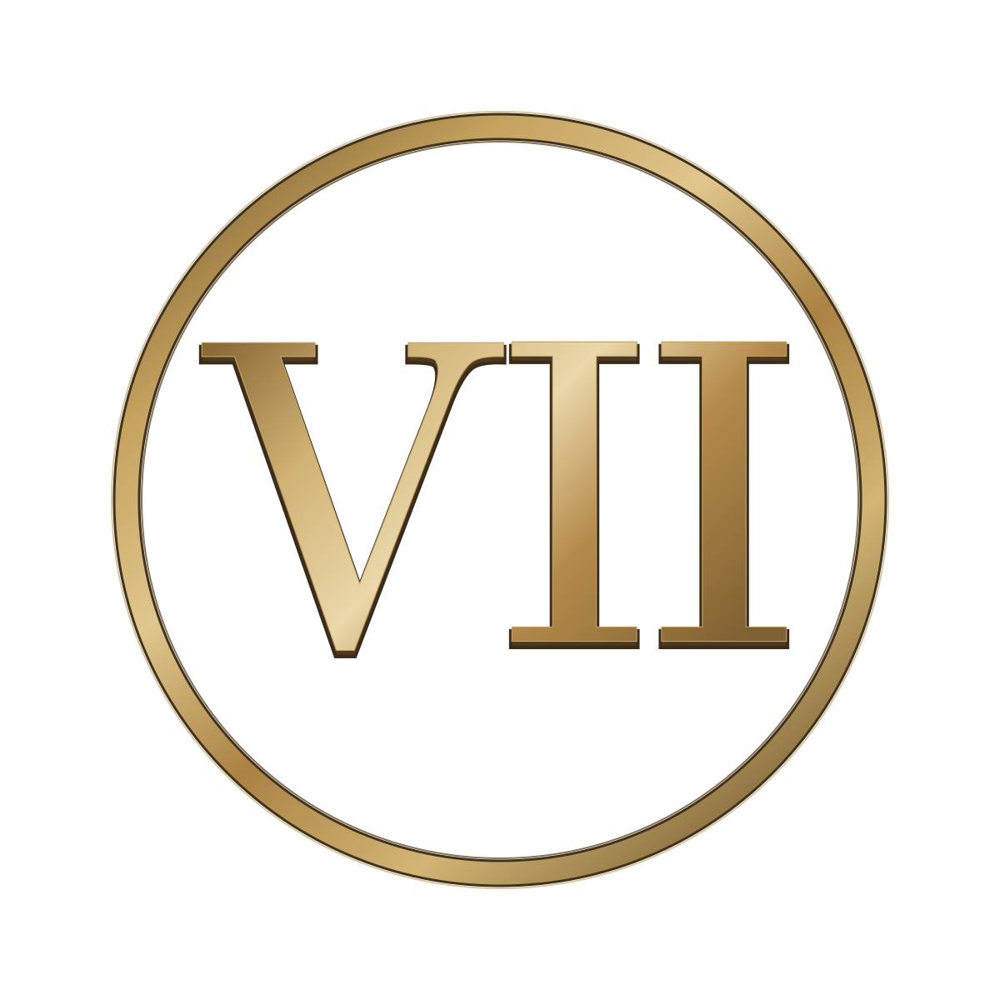

Fine Dining & Restaurants
Curated atmosphere for dinner service, signature evenings and destination-led culinary concepts.

THE SEVENTH TABLE
The Business Lounge
Created for hotels, restaurants, lounges, airlines, cruise lines and selected luxury brands that understand how deeply a guest remembers a feeling.
Beyond background music
Great hospitality is remembered through details: the light, the service, the glassware, the first conversation and the atmosphere surrounding it all.
THE SEVENTH TABLE creates destination-led dining soundtracks that support those details without competing with them. The music remains discreet — while the experience becomes unmistakable.
Hospitality
One musical world, adapted to the identity, time of day and emotional rhythm of your venue.
Curated atmosphere for dinner service, signature evenings and destination-led culinary concepts.
Music for restaurants, lobbies, suites, terraces, spas and private guest experiences.
Restrained, distinctive sound for conversation, late evenings and members-only environments.
Destination storytelling through music — from boarding and lounges to dining and branded journeys.
The Collection
From Italian Sunset to Buenos Aires Evening, the first collection travels through ten destinations and 120 original dining soundtracks.
Founding Partnerships
Selected founding designations are offered once per category. They are designed for organisations capable of shaping the international story of THE SEVENTH TABLE over the long term.
One category. One founding partner. Never repeated.
Request confidential informationVenue use, synchronisation, branded content and tailored music concepts.
Open licensing → Selected collaborationsFor brands, venues, events and cultural collaborations.
Submit a request → Official materialsApproved brand information, imagery and contact details.
Open media kit →Private Enquiry
Tell us who you are, what kind of space or partnership you represent and what you would like to create.